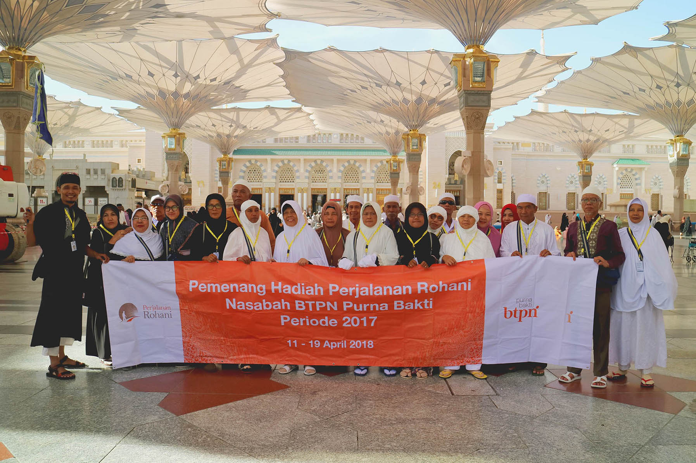

02 MEI 2019
BTPN Wujudkan Mimpi 12 Nasabah Purnabakti ke Tanah Suci

Fokus dan konsisten melayani segmen masyarakat pensiunan, PT Bank
Tabungan Pensiunan Nasional Tbk (BTPN) memberangkatkan 12 orang
nasabah purnabakti beserta pasangannya untuk melakukan ibadah
umrah/ziarah ke Tanah Suci. Para pemenang yang beruntung merupakan
hasil pengundian program hadiah Perjalanan Rohani periode 2017 yang
dilakukan pada Januari 2018 kepada nasabah BTPN Purna Bakti di seluruh
Indonesia.
Dari seluruh nasabah pemenang, 11 pasangan diberangkatkan ke Arab
Saudi untuk melakukan ibadah umrah pada 11 April 2018. Mereka
melakukan perjalanan selama sembilan hari yang meliputi perjalanan di
Jeddah, Madinah, dan Mekkah.
Sementara itu, satu pasangan mendapatkan perjalanan rohani ke Israel
yang berangkat pada 5 Mei 2018. Satu pasangan ini melakukan perjalanan
selama enam hari ke Tiberias, Galilea, dan Yerusalem.
Program hadiah Perjalanan Rohani merupakan program tahunan yang telah
diadakan oleh BTPN Purna Bakti sejak 2009, sebagai bentuk apresiasi
kepada para nasabahnya. Sebelum ini, BTPN telah memberangkatkan 165
nasabah beserta pasangan masing-masing.
Dalam Perjalanan Rohani ini, BTPN menyediakan transportasi, akomodasi,
serta pemandu perjalanan ibadah bagi seluruh pemenang. BTPN berharap
dengan diadakannya program tahunan ini, para nasabah pemenang dapat
menikmati masa pensiunnya dengan lebih bahagia, sejahtera, dan sehat
baik secara jasmani maupun rohani.
BERITA TERBARU
Pelepasan Nasabah Purnabakti Pemenang Hadiah ...
SELENGKAPNYA ⟩12 Nasabah Bank BTPN Menjadi Pemenang Undian Berhadiah Wisata Rohani ...
SELENGKAPNYA ⟩BTPN Wujudkan Mimpi 12 Nasabah Purnabakti ke Tanah Suci ...
SELENGKAPNYA ⟩